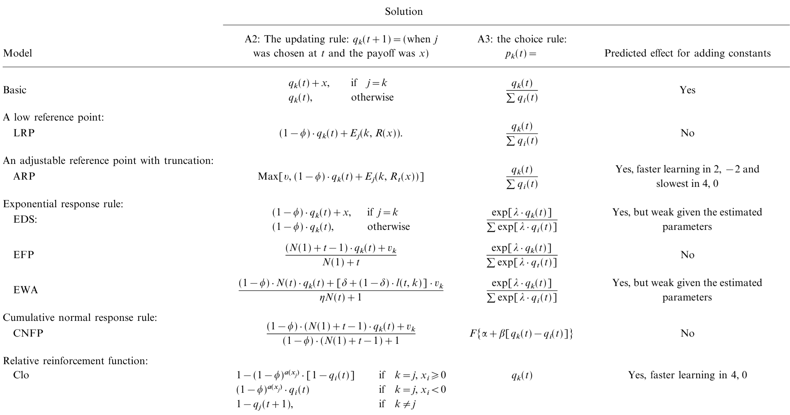
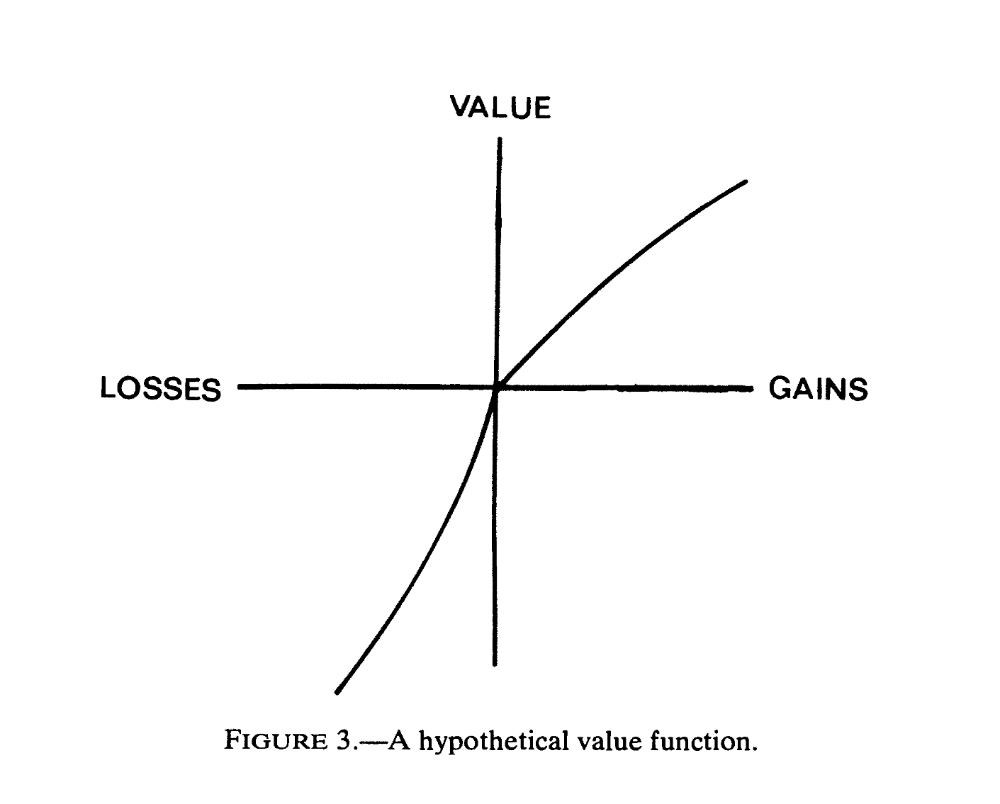

On Learning To Become a Successful Loser: A Comparison of Alternative Abstractions of Learning Processes in the Loss Domain
Paper Review
Roth-Erev Learning, Low Reference Point, LRP, Adjustable Reference Point and Truncation, ARP, Exponential Response Rule, EDS, EFP, EWA, Cumulative Normal Response Rule, CNFP, Relative Reinforcement solutions, CLO
I tracked this paper due to it being highlighted in (Skyrms 2010) as the source of a model that learns a signaling systems faster. I got me started with the loss domain. I was eventually able to find how to speed up learning by in the Lewis signaling game by considering the much more likely mistakes. Once I got on this algorithm I was thinking that using this idea for Bayesian updating of beliefs. This eventually led me to a second algorithm that was able to rapidly adjust a belief regarding the the state of the world in lewis signaling game with changing distributions.

Besides having this amazing title this research paper compares five mathematical models that predict student behavior in repeated decision-making tasks involving gains and losses. The core issue is how to accurately represent the effect of losses on learning, as observed deviations from expected utility theory exist They conducted an experiment and find that learning in the loss domain can be faster than in the gain domain. The main results suggest that adding a constant to the payoff matrix can accelerate the learning process, supporting the adjustable reference point (ARP) abstraction of the effect of losses proposed by (Roth and Erev 1995).
I’ts worth noteing that although this paper is about reinforment learning methods, the approach taken is more in line with how this is considered in the field of economics and pholosophy and less from machine learning or continous control. This is a good example of how the same problem can be approached from different fields. I would hazzard to say that the approches also align with the bandit settings.
Abstract
One of the main difficulties in the development of descriptive models of learning in repeated choice tasks involves the abstraction of the effect of losses. The present paper explains this difficulty, summarizes its common solutions, and presents an experiment that was designed to compare the descriptive power of the specific quantifications of these solutions proposed in recent research. The experiment utilized a probability learning task. In each of the experiment’s 500 trials participants were asked to predict the appearance of one of two colors. The probabilities of appearance of the colors were different but fixed during the entire experiment. The experimental manipulation involved an addition of a constant to the payoffs. The results demonstrate that learning in the loss domain can be faster than learning in the gain domain; adding a constant to the payoff matrix can affect the learning process. These results are consistent with by (Roth and Erev 1995) adjustable reference point abstraction of the effect of losses, and violate all other models
Outline:
Introduction
- Highlights the difficulty in developing descriptive models of learning in repeated choice tasks that involve potential losses.
- Presents the main goal of the paper: to compare the descriptive power of five distinct solutions to this difficulty and to identify a robust approximation of learning in simple decision tasks.
The Challenge and Alternative Solutions

- Discusses the difficulty in abstracting the effect of losses given the approximately linear relationship between choice probabilities and the ratio of accumulated payoffs observed in the gain domain.
- Introduces probability learning tasks used to derive and compare the predictions of different models.
- Presents five alternative solutions to the problem:
- Low Reference Point (LRP):
- Transforms objective payoffs into non-negative rewards by subtracting the worst possible outcome
- Adjustable Reference Point and Truncation (ARP)
- Uses an evolving reference point to distinguish gains and losses and truncates negative values to ensure positive propensities
- Exponential Response Rule (EDS, EFP, EWA)
- Applies an exponential function to propensities, eliminating the need for handling negative values directly. Examples include Exponential Discounted Sum (EDS), Exponential Fictitious Play (EFP), and Experience Weighted Attractions (EWA) models
- Cumulative Normal Response Rule (CNFP)
- Uses a cumulative normal distribution to model the relationship between payoffs and propensities- Employs the cumulative normal distribution function to map propensities (which can be negative) to choice probabilities (which are always between 0 and 1). The CNFP model exemplifies this.
- Relative Reinforcement solutions (CLO)
- Uses outcome-specific parameters to determine the impact of different outcomes on choice probabilities. The Cardinal Linear Operator (CLO) model demonstrates this.
- Low Reference Point (LRP):
- Describes the specific implementations of these solutions through different models, including their assumptions and parameterizations.
Experiment
- Describes the experimental method, including the participants, the procedure, and the payoff structure of the probability learning task across three conditions.
Results
- Presents the aggregated experimental results, showing a significant effect of the reward condition on the proportion of optimal choices.
- Compares the quantitative predictive and descriptive power of the models using correlation and mean squared deviation (MSD) measures.
- Discusses the between-subject variability observed in the data and the limitations of the models in capturing this variability.
- Conducts a model-based analysis to evaluate the robustness of the condition effect.
- Performs a sensitivity analysis to assess the robustness of the ARP model’s predictions to changes in parameter values.
Discussion
- Discusses the main finding that the addition of constants to payoffs affects the speed of learning, highlighting the role of the distinction between gains and losses.
- Notes the advantage of the ARP model in capturing the observed results and acknowledges the potential validity of other solutions under specific assumptions or parameterizations.
- Addresses the generality of the findings by discussing:
- Settings where the ARP model’s predictions are consistent with previous research (probability learning, signal detection).
- Settings where the model might fail (learning among only positive outcomes, influence of other players’ payoffs).
Conclusions
- Concludes that human learning is affected by the distinction between gains and losses.
- Emphasizes that modeling this distinction, particularly through the adjustable reference point approach, improves the descriptive power of adaptive learning models.
- Acknowledges the need for further research to refine the quantification of the reference point for a more accurate and generalizable model.
Key Takeaways
- In most RL settings rewards are sparse. One way to speed up learning is to try and increase our reward signal.
- This is the basis for seeling out to decompose the reward signal into an internal motivation for the agent and an external motivation for the problem designer.
- Another approach though is to consider the loss domain. If we can get signals out of losses we can speed up learning and RL agents are slow learners - especially deep RL agents.
- A third approach that I was able to make use of is to use both the loss domain and the gain domain to update beliefs about the possible states of the world. This was allowed me to speed up Bayesian learning algorithm for a coordination task.
Besides this the paper has a lot of possible options for potential update rules to get this potential speed up.
- How does adding a constant to all payoffs in a decision task affect learning, and which model best explains this effect?
One of the results I learned is that adding a constant to the payoff matrix doesn’t change it. In fact linear transformations of the payoff matrix don’t change the outcomes. In policy gradient methods this we call this trick learning with baselines. What we see is that it doesn’t bias the estimator but can drastically reduce the variance of the estimator. And this variance is the noise that slows down learning by the agent. So adding a constant can surprisingly impact learning speed. The ARP model uniquely predicts this: subtracting a constant to introduce losses speeds learning compared to a purely gain-based scenario. This highlights the psychological impact of the gain-loss framing.
Another insight I had about this is while trying to abstract the RL algorithms. Was that under some conditions we can convert the reward function into a distance metric. Having a metric makes navigation states space much simpler. I really can’t think of a better feature.
- What are the limitations of the ARP model?
- The ARP model, with its current parameters, assumes an initial reference point of zero and a slow adjustment process. This might not hold when:
- All options are positive: The model would predict slow learning even when clear differences exist.
- Social comparison exists: People may adjust their reference point based on other players’ payoffs, a factor not currently incorporated in the model.
- How would you define the loss domain and the gain domain ?
The gain domain is when choice probabilities are approximately linearly related to the ratio of accumulated reinforcement.
The loss domain is when negative payoffs are possible.
In the gain domain, the probabilities of choosing an alternative match the ratio of accumulated reinforcement, meaning that individuals are more likely to choose options that have yielded higher rewards in the past.
Descriptive models have to assume that choice probabilities are determined by a function of the accumulated reinforcements, which must have strictly positive values. However, this presents a problem when losses are possible because negative payoffs can result in negative values for the function.
- In the paper the autors mention the value function from prospect theory c.f. (Kahneman 1979). How does this relate to the ARP model?
The authors state that models that use solutions other than the adjustable reference point can account for the results of the study under the assumption that the model’s parameters can be affected by the payoffs. One way to account for this is to use reinforcement functions with the characteristics of Prospect Theory’s value function. Prospect theory, developed by Kahneman and Tversky, suggests that individuals make decisions based on the potential value of losses and gains rather than the final outcome, and that losses have a greater impact on individuals than gains do. This relates to the ARP model because it also assumes that reinforcements are evaluated relative to a reference point, meaning outcomes above the reference point are perceived as gains (reinforcements) and outcomes below the reference point are perceived as losses (punishments).
- Is there a formal definition of this prospect theoretic value function?

A key element of this theory is the value function, which exhibits these characteristics: - It’s defined on deviations from a reference point. - It’s generally concave for gains and convex for losses. - It’s steeper for losses than for gains, meaning an equivalent loss has a greater psychological impact than the corresponding gain.